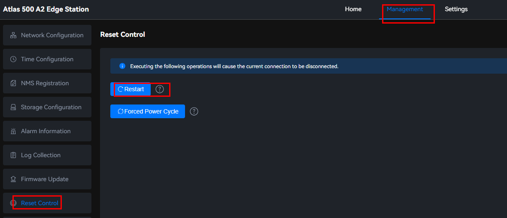
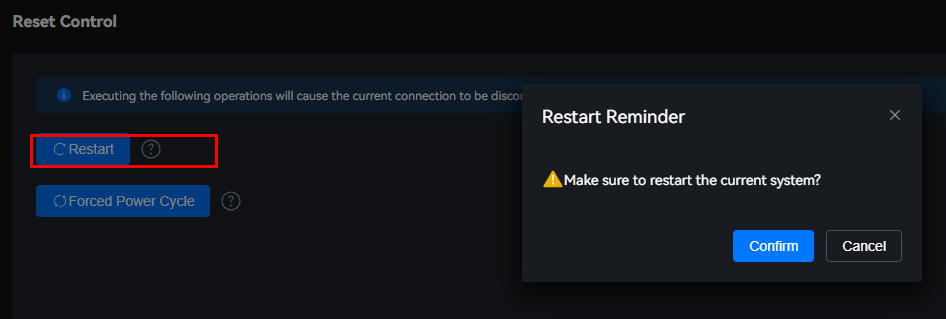
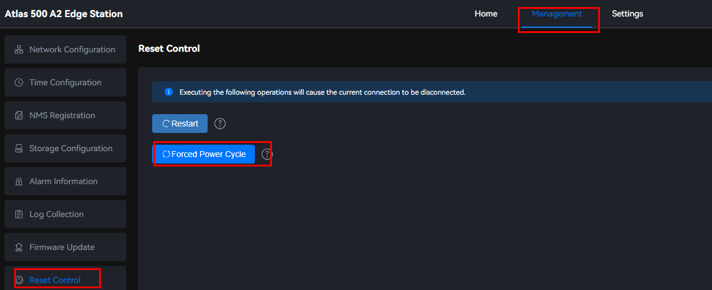
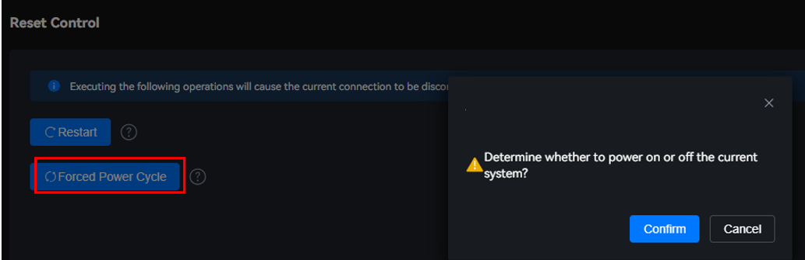

Scenarios
Restarting the system affects ongoing user services. Forcibly power cycling the system may damage system data. During routine maintenance, perform operations as required.
Restart System
- Choose Management > Reset Control.Figure 1 Reset control
 - Click Restart. A confirmation dialog box is displayed.Figure 2 Restarting the system

After you click Restart, the system is forcibly restarted. This operation affects user services that are running.
- Click Confirm. Wait until the system is restarted.
Forced Power Cycle
- Choose Management > Reset Control.Figure 3 Forced power cycle
 - Click Forced Power Cycle. A confirmation dialog box is displayed.Figure 4 System restart

After you click Forced Power Cycle, the system will be forcibly powered off and then powered on. This operation may damage system data. Exercise caution when performing this operation.
- Click Confirm.